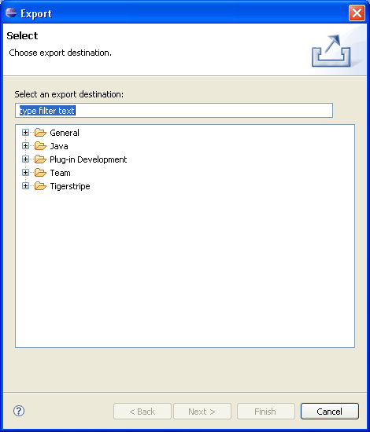
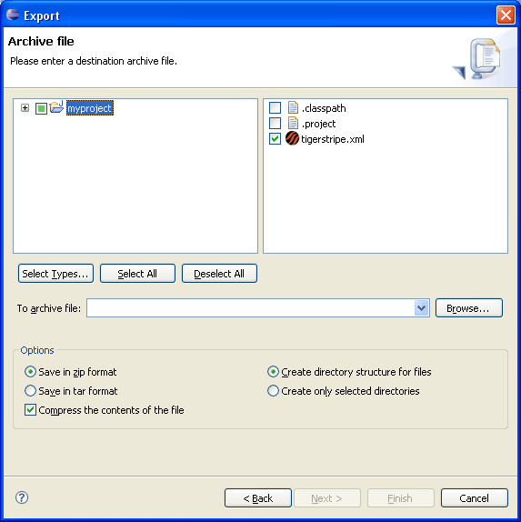

Exporting a Tigerstripe Project
As with any Eclipse project it is possible to export an existing Tigerstripe Project into an archive (.zip) file, so you can further import it into another workspace.
Before you begin, make sure your Tigerstripe Perspective is active. Complete the following procedure to export a Tigerstripe Project.
To export a Tigerstripe Project
- Right-click on the root of the project to export in the Tigerstripe Explorer. Note: The project needs to be open.
- Select Export. The Export wizard displays:

- Click General and select Archive File from the Select an export destination list.
- Click Next. The following wizard displays:

- The dialog box should contain a list of open projects, where the project selected for export is checked. Before you continue, ensure that the following options are selected:
- Save in zip format: this option ensure that the files are combined in the archive file (.zip).
- Create Directory Structure for files: this option ensures that the created archive file maintains the directory structure of the original project.
- Enter the name of the target archive file in the To archive file text box and click Finish.
The archive file is now ready to be imported into another workspace. For more information, refer to Importing a Tigerstripe Project.
© copyright 2005, 2006, 2007 Cisco Systems, Inc. - All rights reserved